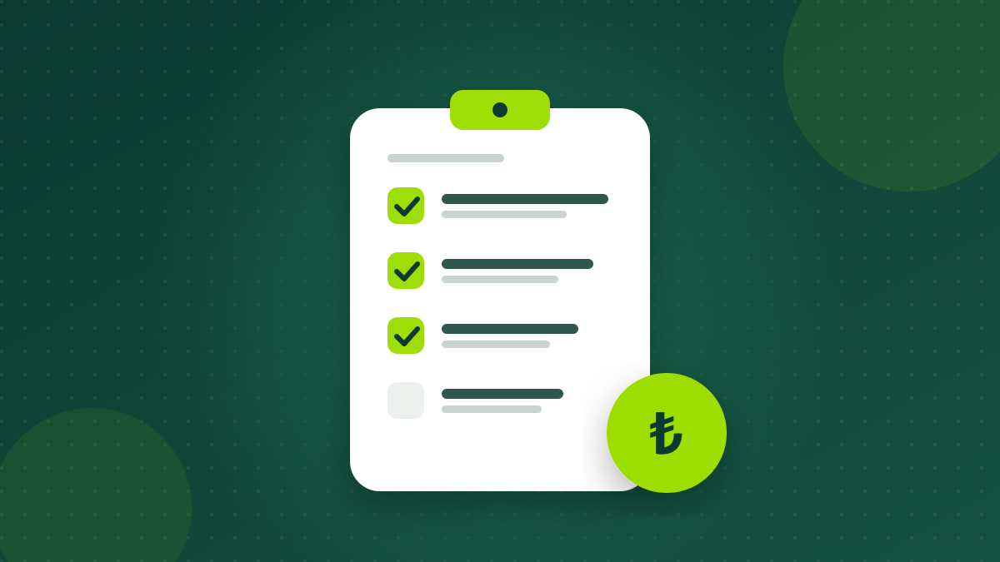

Borç Kapatma Kredisi: Kart Borçlarını Tek Taksitte Toplamak Mantıklı mı?
Birden fazla kart ve hesap borcunu tek bir krediyle toplamak faizi düşürebilir ve takibi kolaylaştırır. Ama her durumda kazandırmaz. Nasıl karar verileceğini anlattık.

Doğru tutar, doğru vade ve hazır belgelerle başvurmak onay ihtimalini artırır, gereksiz maliyetten korur. Başvuru öncesi kontrol listemiz.

İhtiyaç kredisi; beklenmedik bir harcama, eğitim, tadilat ya da borç kapatma gibi pek çok amaçla kullanılabilen, teminat istenmeyen bir tüketici kredisidir. Başvuru birkaç dakika sürse de, öncesinde yapacağınız küçük kontroller hem onay şansınızı hem de ödeyeceğiniz toplam tutarı doğrudan etkiler.
Daha yüksek tutar daha fazla faiz demektir. İhtiyacınızı kalem kalem yazın ve birikimlerinizle karşılayabileceğiniz kısmı düşün. Tutarın büyümesi ayrıca kullanabileceğiniz en uzun vadeyi de kısaltabilir.
Tüm kredi ve kart taksitlerinizin toplamının aylık net gelirinizin makul bir kısmında kalması önemlidir. Pek çok finans uzmanı bu oranın gelirin üçte birini geçmemesini önerir. Kira, faturalar ve zorunlu giderlerden sonra elinizde beklenmedik durumlar için pay kalmalıdır.
İhtiyaç kredilerinde kullanılabilecek en uzun vade, BDDK düzenlemeleriyle kredi tutarına göre sınırlandırılır. Sitemizdeki hesaplayıcının güncel olarak uyguladığı sınırlar şöyle:
| Kredi tutarı | Vade aralığı |
|---|
Vade uzadıkça taksit düşer ama toplam maliyet artar. Bütçenizi zorlamayan en kısa vadeyi seçmek genellikle en ekonomik yoldur.
Başvurmadan önce Findeks üzerinden notunuzu ve kredi raporunuzu kontrol edin. Raporda size ait olmayan bir kayıt ya da hatalı bir gecikme görürseniz ilgili kurumla iletişime geçin. Notunuzu yükseltmek için yapabilecekleriniz için kredi notu rehberimize göz atabilirsiniz.
Bankalar çoğu başvuruyu dijital olarak değerlendirir, ancak ek belge istenebilir. Hazırda bulundurmanız faydalı olanlar:
Aylık faiz oranı tek başına yanıltıcı olabilir. İhtiyaç kredisinde faize %15 KKDF ve %15 BSMV eklenir; ayrıca kredi tutarının binde 5'ine kadar dosya masrafı alınabilir. Teklifleri aynı tutar ve vadeyle, toplam geri ödeme ve yıllık maliyet oranı üzerinden kıyaslayın. Ayrıntılı örnek için kredi maliyeti yazımıza bakabilirsiniz.
Kredi çıkarma vaadiyle sizden önceden ücret, dosya bedeli ya da şifre isteyenlere itibar etmeyin. Bankalar kredi onayı için peşin ödeme istemez.
Tutarınızı ve vadenizi girin, bankaların taksitlerini tek ekranda görün.
İhtiyaç kredisi hesaplaGenellikle hayır. İhtiyaç kredisi çoğunlukla gelir ve kredi notuna göre teminatsız verilir; ancak banka değerlendirmesine göre ek teminat veya kefil isteyebilir.
Kredi notunuzu ve mevcut borç yükünüzü kontrol edin, daha düşük bir tutar veya farklı bir vade deneyin. Kısa sürede çok sayıda bankaya art arda başvurmaktan kaçının.
Evet. Tüketici kredisi sözleşmelerinde 14 gün içinde gerekçe göstermeden cayma hakkınız vardır.
Bu yazı genel bilgilendirme amaçlıdır. Oranlar, vergiler ve yasal sınırlar değişebilir; kesin koşullar için bankanızın sözleşme öncesi bilgi formunu inceleyin.
Birden fazla kart ve hesap borcunu tek bir krediyle toplamak faizi düşürebilir ve takibi kolaylaştırır. Ama her durumda kazandırmaz. Nasıl karar verileceğini anlattık.
Aylık faiz oranı tek başına yeterli değil. Vergiler, dosya masrafı ve yıllık maliyet oranıyla bir kredinin size gerçekte kaça mal olduğunu adım adım hesaplayın.
Kredi başvurunuzun sonucunu ve size sunulan faizi en çok etkileyen şey kredi notunuz. Notun nasıl oluştuğunu ve yükseltmek için atabileceğiniz adımları anlattık.